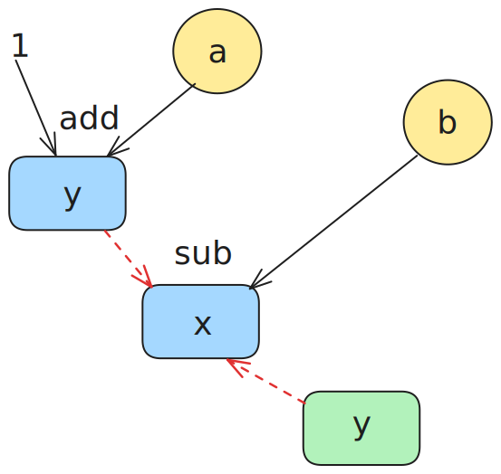
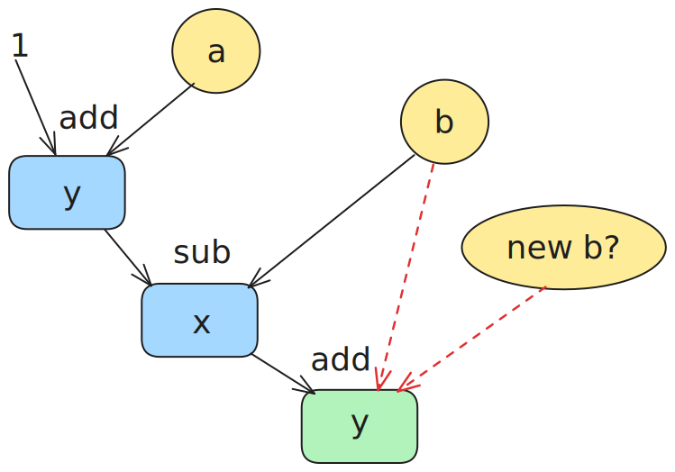
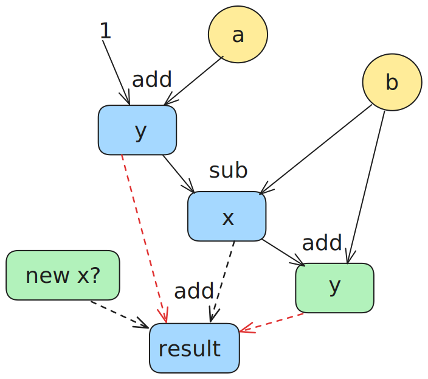

从四元组到静态单赋值形式¶
提示：你可以跳过阅读这一部分，但是阅读该部分可能有助于你理解本实验中间代码的设计.
常见的平台无关中间代码是线性的一串指令.
在早期，指令的设计风格通常是四元组 (quads) 形式，例如 x = y binop z.
其中有操作码 binop，两个源变量 y 和 z，以及一个目标变量 x，因此被称为“四元组”.
一种可能的四元组风格 IR 设计形如下：
| 类型 | 格式 | 说明 |
|---|---|---|
| 数据流指令 | x = y binop z |
将y和z的双目运算结果存放到x中 |
x = #k |
将常量k加载到x中 | |
x = *y |
将y所指向的值存放到x中 | |
*x = y |
将y的值存放到x指向的位置中 |
对应的常见的实现方式如下：
class Instruction {
// all possible opcode.
enum Opcode { ... };
Opcode op;
// id of destination variable.
int dst;
// id of first and second source variable.
int src0, src1;
// instructions connected as a linked list.
Instruction *next;
}
其中 Opcode 是所有可能的指令操作码，指令的源变量 src0 和 src1、指令的目标变量 dst 使用一个整数作为索引（或者使用一个变量名的字符串），next 以链表的形式顺序连接下一条指令.
四元组看似很简单，但是有一个比较严重的问题，就是不太方便做代码优化，请看下面这条例子：
代码的优化经常需要追踪数据流，也就是追踪四元组中两个源变量的值是由哪条指令进行的赋值，又被哪些指令使用.
我们一步一步看.
首先是 y = a add 1 这条指令，似乎很显然，不是吗？
源变量 a 和常数 1.
但是遇到 x = y sub b 时，我们很快遇到了麻烦: 这条指令需要的 y 的值是哪里被赋值的，或者说 y 最新的值在哪里，是 y = a add 1 还是 y = x add b？

接下来的 y = x add b，源变量 b 还是上一条指令 x = y sub b 中用到的那个 b 吗？还是有其他指令为 b 赋了新值？

某一条和它们隔得很远的指令 result = x add y，它们的 x 和 y 又从哪里来？

你会发现，我们一直需要知道某个源变量最新的赋值发生在哪里，这意味这：
- 要么每次从后往前扫描，第一个遇到的对源变量的赋值，就是最新的值，而且对于循环可能需要特殊处理，这样时间开销很大.
- 要么维护一个稠密的集合，记录当前指令前所有变量最新的赋值发生在哪里，这样在变量很多的情况下空间开销很大.
上述这种“某个源变量最新的赋值发生在哪里”关系被称为使用-定义链 (use-def chain)，静态单赋值形式 (SSA) 的优点之一就在于它能较好地维护 use-def chain.
SSA 的一个特点是每个变量仅赋值一次，如果存在某个多次赋值的变量 x，你需要对它重命名，例如把第 0 次、第 1 次...第 n 次重新赋值重命名为 x.0 x.1 ... x.n，并且使用变量 x 也可以也必须准确地指明是重命名后的 x.0 x.1 ... x.n 之中的哪个.
因此，上面的代码需要写成:
- 由于只赋值一次，每个赋值的变量名都是独一无二的，因此你可以把赋值看作“定义” (define) 了一个新变量，这样我们就能明确地知道源操作数的值是怎么产生的.
- 更进一步地，由于变量只赋值一次，我们不需要记录原变量的 id 或者 name，源变量的使用 (use) 只需要一个指向定义这个变量的指令的指针就可以表示.
- 再进一步，既然原变量使用指针索引，那么指令里面目标变量也失去了意义，指令本身就可以指代被新定义“变量”本身.
经过这么一番改造，指令的实现大致如下所示：
class Instruction {
// all possible opcode.
enum Opcode { ... };
Opcode op;
// first and second source variable.
// `use` of the `definition` of src0 and src1.
Instruction *src0, *src1;
// instructions connected as a linked list.
Instruction *next;
}
进一步地，我们就可以直接忽略繁琐的重命名，直接简化为：
// somewhere `a` is defined as `%0`
%0 = ...
// somewhere `b` is defines as `%1`
%1 = ...
%2 = %0 add 1
%3 = %2 sub %1
%4 = %3 add %1
...
%i_dont_know_the_number = %3 add %4
因此我们可以发现，SSA 风格的指令中，指令使用 (use) 的操作数 src0 和 src1 直接指向了变量的定义 (definition) 处，因此指令之间就像一个图一样标记了数据的之间的依赖关系。
同样对偶地，在 SSA 形式上可以方便地计算出，某个变量的定义 (definition) 的所有被作为操作数使用 (use) 的的情况，这种关系叫做定义-使用链 (def-use chain).
定义-使用链和使用-定义链都是数据依赖 (data dependency) 的表现形式.
使用 SSA 风格相比四元组风格具有以下优点：
-
减少“复制”操作，例如这是四元组风格：
SSA 语境下，由于指令就是指本身，指向指令t1 = #1的指针实际上就是指向常数值#1，因此复制操作是冗余的，上面这段代码可表示为： -
方便优化，例如基于迭代的数据流分析可以直接沿着 use-def chain 追踪，这种方式是“稀疏”的，因为不用像经典方法那样在每个程序点维护一个包含所有变量的稠密集合.
如果你有兴趣，可以阅读 Cliff Click 的 From Quads to Graphs，以及 SSA Book。